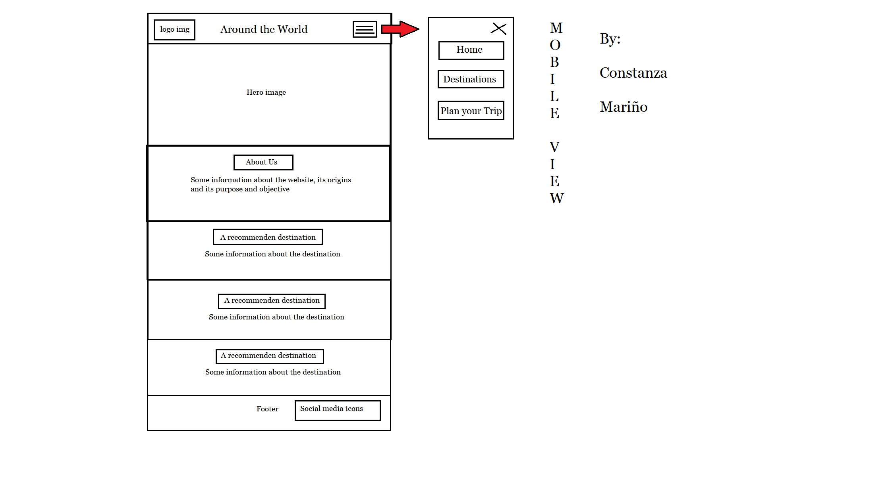
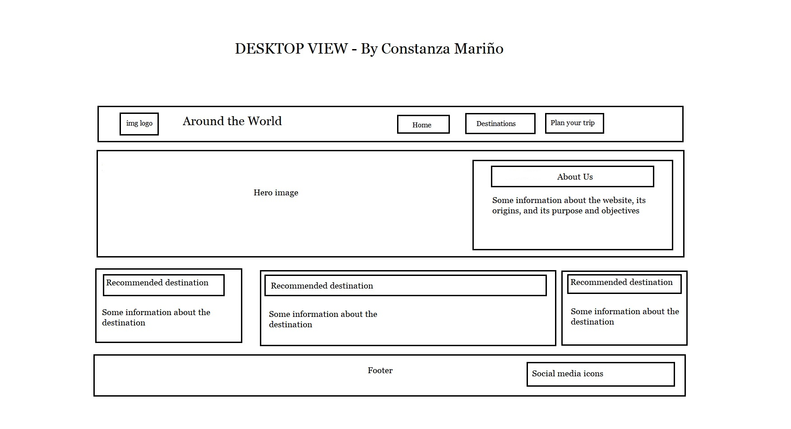

Site name
Around the World
I chose this name for the website because it is a powerful and recognized phrase that immediately tells the user its purpose, which is travel and exploration. It evokes a sense of adventure and curiosity without geographical limits. This suggests that te website is a specialized and comprehensive guide for anyone looking to discover new cultures, experiences and landscapes across the globe.
Site purpose
The site will serve as a recommendation trip platform, offering details about 10 specific destinations, recommended activities and a form to receive personalized guides via email
Scenarios
- A user: I am a traveler with a limited budget, what free or cheap activities are available in the recommended destinations
- A user: I am interested on receiving monthly updates about new destinations, where can I subscribe to the newsletter?
Color Scheme
For this project I will use the following colors:
- Main color: #0077b6 (Ocean Blue) For headers and the navigation menu
- Second color: #f5761b (Sunset Orange) Mainly for buttons
- Section colors:#f1faee (Off-white) For sections backgrounds
Typography
- Titles: Oswald or Roboto Condensed (They make the website look modern and clean)
- Body: Open Sans (For maximum readability in mobile devices)
Wireframes
The structure will adapt from a single column on mobile to a three-column grid on desktop.
Mobile View
Desktop View
Important note: These are sketches, so the design may change slightly when the project is actually completed. I'll try to follow the plan anyway.